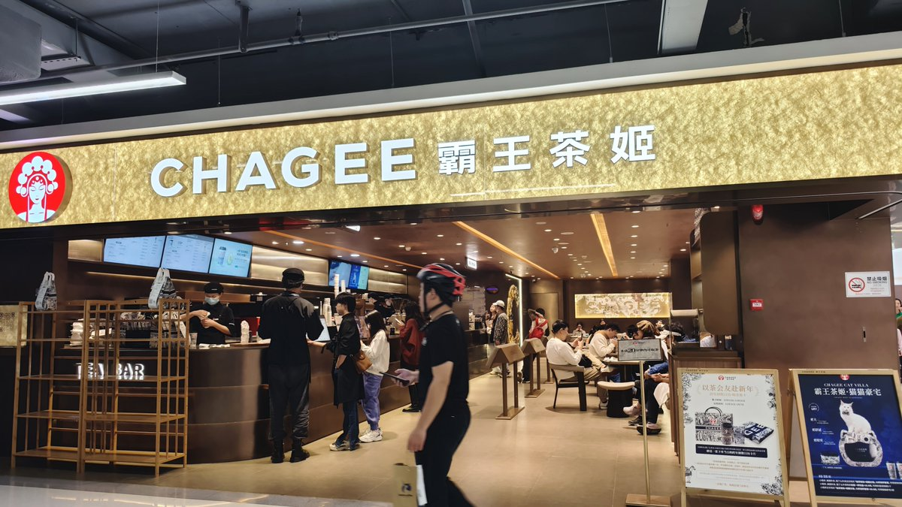

Chagee

Locations across Shenzhen — flagship at MixC World, Luohu District
The country's favorite premium milk tea brand. Chagee focuses on using real high quality fresh-brewed tea, and their signature Bo Ya Jue Xian jasmine milk tea has become the order to beat in mainland China.
Visit Website